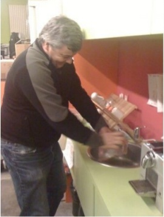

Ioana Chiorean, @ioana_cis or ioana@mozilla.com
#OpenSourceIasi
the community of women and men from mozilla and other open source projects that support the participation of women in open source projects.
Uniformity leads to boredom (Antoine Houdar) 